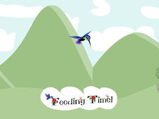
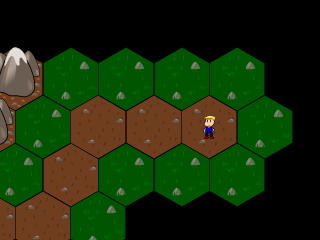
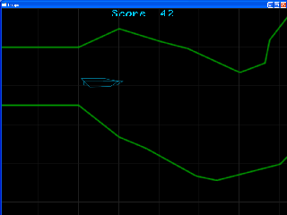
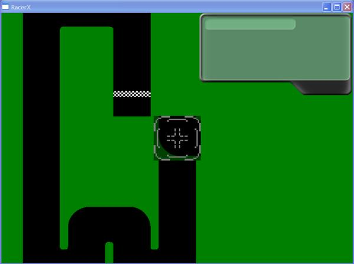
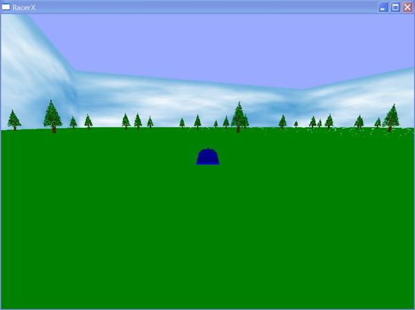

Long ago I started the Artificial Intelligence in Racing Simulations project, and I have finally made some progress by computing the racing line, procedurally knowing only the left and right edges of a track. This was a fun project. First step was to calculate the center-line given only two arrays of points representing the left/right edges. After a so-so tries, I finally found that it was best to guess where the next center point was before extending outwards to the left and right to compute the actual center.
Once the center line was computed, the fun portion began. I setup a simulation based on hinges acting like springs, which would then try to pull the center line into a racing line, like magic! Only, not the first try. I had to constrain the nodes movement to be only horizontally across the track as the line moved all over the place and my for some unknown reason the collision with track edges ended in failure. Good news though, once I constrained the movement, the need for collision was no longer needed. The result is quite amazing to watch.

LudumDare 27 was a collaboration between myself and my lovely girlfriend who did all the art. Obviously since I didn't touch the art, the game came out looking great. It didn't play too bad either, although it got crazy hard too quickly. This was mostly due to time-management as we didn't leave enough time for level design and editing. So while we got 5 levels made, level 4 and 5 are pretty difficult, but it is possible to beat them. Unfortunately we didn't have enough time to add a good win effect, so if you manage to beat level 5 you will start at level 1 again and continue looping.
The game is certainly worth a try, even if it is difficult, and you can try it anytime here.

Cracked! was created with joekinley during LudumDare 23. Save the kids from the doom they face as the world falls beneath their feet. joekinley did all art, sounds and content, and I handled all the programming. This was the first major project I tackled for Flash; but had some minor experience with ActionScript3 prior to.
The project came out fairly polished for less than 72 hours spent on it. The idea popped up fairly soon after the Tiny World theme was announced, we knew we wanted puzzle / strategy, and went from there. The strategy did not play out exactly as we expected, but with so little time we could not just switch gears so late. Feedback has stated it is fun, so feel free to try Cracked! for yourself!
OverGameEditor Framework
In summer of 2010 I started working on a small editor framework as I was fed up with creating in-game editors that relied on poor interfaces, random key-presses and just barely being useful. The prototype of the idea worked, but had some flaws. In Februrary 2012 I found some free time to improve on the prototype, simplify the interface and work out the kinks.
The OverGameEditor is a framework that takes control of a game window to add additional features and niceties found in a professional editor. Theoretically it should be capable of working with any windows based project/engine. The framework provides three main areas; Menu Bar, Edit Area and Status Bar. It also adds a few bits of functionality including; hotkeys for the menu bars, right-click context menu and the ability to edit values in real-time.
A short video showing me use the OverGameEditor framework can be found on youtube.
This time I planned to aim for a very small, but very polished game in 48 hours. For an hour after the theme, Alone, was announced, thought swam around screaming "me me me". Despite the earlier plans for a small polished game I had decided to make football. It is seemingly simple, or more complicated than I would like to admit. The idea was your team left you alone in the 4th quarter, to finish the game that your team was already losing.
From the previous LudumDare entry, I knew I needed sound. So I whipped up a quick piece of music, this time I had a plan- although it wasn't performed with perfection. I also made a solid handful of voice overs, I figered the sounds as an announcer would bring the football game to life a bit more, despite my lack of voice acting ability.

With 48 hours set, my task was clear. Design and develop a game based on the theme: Escape. Out came a physics based gliding game that had been in my head for awhile, though it did not get near the original ideas. Original scope was cut back, a lot. The graphics, or lack of, were kept simplistic, lines with a glow. The result was actually something pleasing.
The project had no audio though, sound effects or background music. This detracted from the overall experience, but having such limited time I did not find a way to create sound that would have helped. Making a game, content and all, in 48 hours is extremely challenging. But this particular project stole time away by creating problem after problem.
I am happy with the results though, given what happened. For a deeper look at what happened over the course of that weekend, check out the Postmortem blog entry.
An experimental weekend project between another programmer and myself. The concept of the idea came from a unique way of brainstorming, that I found to be rather interesting, though certainly challenging. During brainstorming there was no 'theme' added to the game. Only the game mechanics and rules could be discussed. Halfway through the weekend and there had already been a lot of progress, and of course there had been some challenges.
Getting up to speed with the project happened rapidly. After starting mid day on Friday we had a swarm following the player which teleports and moves through the vacuum like environment. The camera followed the player and the world was loaded by a level script.
However after playing this way for awhile it was noticed that the teleportation of the player was jarring to the experience. We decided to experiment with a time warp like effect, which would slow down the time, teleport to the new position and then speed time back up. This was better in someways although not entirely convincing that time is what is effected. Finally after stepping back, it had been the camera jumping so abruptly that caused this separation.
We developed a moving camera that would follow the player at a maximum move speed, but then the player could miss out on things after a teleport, so the camera was put on a spring. The farther the camera is from the player, the faster it moves toward the player. This was a lot better feeling for the game.
Hooked: Hull Breach
Hooked was established early in February 2010, and after some discussion it was decided that a small, polished project was the aim of the team. Over the course of one long meeting the concept was born, names were created and the project idea was starting to evolve. The idea started as a shoot 'em up, arcade-like game which takes place on a space station. Aliens have breached the station and are attacking the player, whom is head of security, and the other civilians/scientists on-board.
Initially the idea grew larger than our intended scope, so another meeting was called to cut features, and lower the size. Although the same basic idea applies, the current goals will be easier to achieve while maintaining quality all around on each feature and asset added to the project.
Artificial Intelligence in Racing Simulators
I am very interested in racing, and racing simulations more than arcade racing games. There is a difference between a racing simulation and a racing game. A racing game is created so the player is enjoying the race, is challenged no matter what their skill and physics are perhaps tweaked so that the player can have fun taking that corner at 120mph. In a racing simulation, the physics mimic real world physics. This also means the AI techniques used for games can not be used for racing simulations for multiple reasons.
First the artificial intelligence in games are meant to be fun, provide challenge to player skills of a wide range and can therefore get away with techniques. Some games allow the AI to move the car and handle the car collisions directly, perhaps differently than the player car. However, in a simulation, allowing the AI to have direct control over the car like this is unacceptable, the AI driver should be limited to the same controls as the player; steering, throttle, brakes and shifter. Another common technique for balancing game challenge is catch-up mode, where the AI speeds up 110% when the player is far ahead, or slows to 90% when the player is behind. In a true simulator you can't just allow the driver to press the throttle to 110%. So this project is to research some of these techniques and decide what is or is not acceptable for the simulation environment.
Another goal it to give the artificial driver sensors for the visual reference points, physical feelings and other information. Rather than accessing information directly the driver needs to work through the sensors, which I plan to add a 'blurring' layer so the judgment can be wrong. The idea is to make an intelligent driver that can drive a car at the physical limits, without knowledge or ability to tweak the cars physical behavior and behave more like a human with reaction times, blurry judgment and no knowledge of specifics.
Currently I have been using a virtual controller, and the information provided from the Live For Speed Racing Simulator to run my tests. This proves that the AI system will not depend on direct physical information, can only control a car exactly the same way the player can and will work under extreme settings!
Tire Simulation
In December 2008 I started a project to mimic a tire with deformable properties. Within a week or two the project had a deformable mesh, although this mesh was unstable. The project was put on hold due to career and life events until mid October 2009 where work began again.
The tire mesh is created procedurally, then a Point-Mass System is structured in a way that holds the tire together. This allows the contact patch to move separately but also get pulled back into the correct shape. During October many improvements were made including large optimizations. Removed several unnecessary springs, and placed the springs more optimally so that the tire behaved the same with fewer springs. This also allows the tire to have different resistances for lateral and longitudinal forces.
The lateral force is sideways, created when the tire is going around a tight turn and the longitudinal forces are when the throttle/brakes are applied, how the contact patch tends to hold position before bending back in shape. Top fuel dragster tires show longitudinal deformation well, see here. Check out the You-Tube video for more information.
Still in development from time to time, so perhaps there will be updates to come.

This little project goes down as my longest running, single project that I worked on alone. A lot of neat features, but no real completeness. I created a design document for the project in a couple nights, then started the project along side doing my own engine. RacerX was never the intended name, however it stuck. The code base for RacerX was designed properly at the beginning, however with feature creep setting in I implemented many things that were not initially planned. The project doesn't have a reason to keep someone interested, nor does it look overly appealing with my programmer-art abilities, but it proved as a learning ground for me.

Features a tile-based track editor, AI that can travel around any track (although not competitively) Multiplayer lobby, where 8 clients can join a server and chat - including Voice Over Net. Unfortunately that is where multiplayer ends. Physics are rudimentary at best, no collisions. Learned and implemented the merge-sort algorithm to sort tree-sprites quickly depending on the camera position.
So, it might not be the prettiest project I've worked on, though it served as the learning ground for several of the features that were added. From sorting, to recording sound, to writing basic AI that can follow any track. RacerX holds a special position within my personal projects.
;")


{kind=link}
{kind=link}
{kind=link}
{kind=link}
{kind=link}